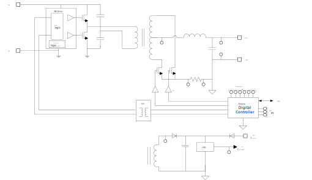

System Top Level FW/HW View
Firmware Hardware Interfacing Block Diagram
System Top Level View
This chapter gives a short overview on the XDPP1100 Project itself. XDPP1100 is a multi-phase Brick Controller Product, see below

XDPP1100 System Level Functional Diagram
Feature Set
This chapter lists the main features of XDPP1100.
Isolated DCDC Digital Controller with fully configurable digital control loop and programmable uC subsystem
- Secondary side sensors with primary side signal emulation
- High resolution analog front end sensors
- Configurable voltage mode or current mode compensation, multiple modes of operation
- Digital dual edge PWM w/ 156 ps resolution
- Extensive fault monitoring including OCP, OVP, OTP
- uC firmware implementation of internal bus and external interfaces, including PMBUS, GPIO, and secondary bus
- on-chip emulated multi-time programmable non-volatile memory (NVM)
Covers typical topologies in 50 W - 1kW power range
- Half-Bridge (HB)
- Full-Bridge (FB)
- Phase shifted full bridge (PS FB)
- Active Clamp Forward (ACF)
- Interleaved Active Clamp Forward (IACF)
- Center Tap (CT) or Full Wave Rectification (FW)
HW Functional Block Diagram
The functional block diagram is outlined in the figure below.
Block Level Functional Diagram
XDPP1100 consists of following functional blocks:
XDPP1100 Functional Partitioning
- Analog Infrastructure (Reference, LDO, LO/PLL)
- Analog Sensor/IF (Mux, Amp, ADC, DAC)
- Analog Sensor Processor
- Offset/Gain Trim and Offset/Scale Adjustments
- Decimate and sample
- High speed comparators
- Control Loop Elements
- Error Amp
- Compensator
- Current/Flux Balance
- Feedforward
- PWM/Sync Rec Control
- Control Loop Management
- Loop Mode
- Voltage/Current Protection
- Fault Manager
- Voltage Target Control
- On/Off Control (Master State Machine)
- Digital Infrastructure
- IOs and Interfaces
- Internal Bus
- CPU Subsystem
- Peripherals Hardware/Firmware Partitioning occurs for every function
- Virtual architecture partitioning set by hw/fw codesign
- architect for flexibility and performance
HW Architecture
XDPP1100's HW Architecture is partitioned as follows
CPUS Architecture
XDPP1100 CPUS contains the main controller centric building blocks and interface peripherals

CPUS Architectural Diagram
- CPU:
- ARM CortexM0 module processor running up 100MHz, embedding 32bit CPU, NVIC (32irq input lines sources), WIC (wakeup interrupt controller), DAP (debug access port)
- MEMORIES:
- Peripherals:
- CSC (SCU, CGU, RGU)
- 16 Channels DMA controller
- 2x 8bit GPIO
- 3x 2x32bit TIMER
- 32bit WDT
- RAM, ROM, OTP wrappers
- Bus Structure:
- BUS matrix 2x8 (0 WS switch latency)
- Added peripherals:
- I2C/PMBUS controller
- I2C M/S controller
DC/DC dedicated peripherals:
- BIF_REG registers
- Loop control/configuration/trim registers
- voltage ramp control, filters, telemetry, fault manager, on-off, power mode
FW Feature Set
This section lists the main FW features comprising the XDPP1100 project.
Code Management, RTOS, Drivers
- ROM, OTP, EEPROM, RAM Configuration Management
- ROM / OTP / EEPROM / FW / BIF / PMBUS parameter management
- multi-config and config defaults
- Pin Configurability/IO access GPx, TMUX, TBUS, MDAC, XV
- Enhanced BIST Access
- Secondary I2C Port I2C/PMBUS Interface/Command Support
- Command Definition and Execution
- Customized Commands
- Configuration/Password Management
- Command Modification/Management HW/FW Peripherals
- Voltage Control
- On/Off Control
- Telemetry
- Fault Manager
- Power Manager
- Loop Manager
- Interrupt Manager
- GP HW Peripherals: S/H, ADC, DAC, comparators, etc FW Debugging and Analysis capabilities
- Test, debug, monitor
- Control Enhancement
- Topology Enhancements: Balance, Dead Time,
- Startup specific behavior
- Fault Monitoring/Management/Dynamic Adjustment
- State Monitoring
- System Estimation: Iin, Vin, Pin/Pout, Cout, Lout, Remote Sense
FW Top Level View
This chapter deals with the top-level architecture and requirements for the XDPP1100 Firmware. Its FW architecture is driven by the following (non-functional) objectives:
- precise and clean encapsulation of functionality into source code modules
- re-usability of such modules for current and future XDPP1100 products
- usage of an off-the-shelf RTOS to support encapsulation of different FW functionalities
- guaranteed and predictable execution of hard real-time functionality,
- best-effort execution of soft real-time functionality
- allows a broad audience of developers and application engineers to implement and maintain products and applications for the XDPP1100 family of products, avoiding long learning curves for FW changes.
The top-level (functional) requirements for the FW architecture are as follows:
- keep the interrupt latency as low as possible to allow predictable hard real-time interrupt execution. Especially relevant parts of the RTX RTOS implementation, the Fault and I2C interrupt handling rule the hard real-time capabilities of the FW. See also Real-Time Requirements.
- allow the usage of interrupt handlers that can potentially operate decoupled from any RTOS interaction (so called 'unmanaged interrupts'). For less strict real-time requirements the use of multiple 'managed interrupts' on one or more interrupt levels is possible. See the RTOS chapter at Introduction for details on the different classes of real-time behaviour.
- a ROM-based approach for the actual FW image, enhanced by a patching procedure that allows to replace or enhance functionality in ROM by patches stored in OTP. Such patches are managed by the user and the FW itself. The FW contained in ROM uses a jump-and-check mechanism for all important and vital functions and modules that checks against a patch table. See Patch FW Module for more details.
- use of Doxygen as the tool for in-source documentation to avoid any "media discontinuities" when implementing source code in text files and updating related documentation (in non-text files).
- The overall FW architecture is event-driven (versus timing driven): The FW is not required to run hard real-time periodic tasks (like filters and such), except for the (soft real-time) system tick of the RTOS. All other FW functionality is essentially event-driven:
- PMBUS transactions are triggered by the main CPU
- Operation and Maintenance functionality is low speed, running on a system tick period.
- FW Architecture
The Firmware for XDPP1100 is structured in layers according to the figure below.
- The User Layer: It is the top-most level containing all functions related to user interaction. This level contains functions which can be provided by the user and reside in an OTP for example. These functions define how the user experiences the interaction with XDPP1100 via different interfaces like PMBus, I2C, RS232. These interfaces will be used for controlling the device in different operational situations like dcdc control, configuration, debugging, maintenance or patching.
- The Application Layer 2: This is a high-level layer if the functions defining an applications are to complex to put them into a single layer. This layer is optional and even more layers can be defined if it helps to bring more structure and clarity into the FW design.
- The Application Layer 1: This is a lower-level layer if the functions are defining a simple application.
- The HW Driver: This Layer defines the direct interaction with the underlying HW including interrupt service routines.
Each layer is separated by an API which is defined in the respective header files. The API of each layer needs to be carefully thought through as it defines the quality and usability of the hierarchical FW design.
- Processing Architecture
Taking the objectives and the requirements into account, the processing architecture in terms of the priority levels looks as shown in the following diagram.
Priority Levels of XDPP1100 Firmware
We find the following noteworthy details:
- The interrupt priority level, is configurable by the ARM and can be changed during run-time.
- on RTOS thread level, the RTOS' scheduler makes the prio decisions and schedules threads as required by current threads priorities and threads readiness. The actual priorities of the threads are configured at build time in each FW module, see the documentation of each FW module at sctMainpage_FW_Mod.
- Module Architecture
The following diagram outlines the module architecture of the XDPP1100 FW. As we see, every FW module operates under RTOS control, the RTOS scheduler decides on every RTOS event which thread has the highest priority and resumes it. The only exception to RTOS control are the unmanaged interrupts that have been introduced above. They do not communicate with the module threads through RTOS services, but may use other means (e.g. interrupt-protected shared variables).
Each module may call the HAL driver layer, thereby talking to the HW peripherals.
Module Architecture of XDPP1100 Firmware
Real-Time Requirements
Interrupt Handling
High Priority Interrupts priority_0_IRQs Medium Priority Interrupts priority_1_IRQs Low Priority Interrupts priority_3_IRQs
Thread Handling


 1.8.9.1
1.8.9.1